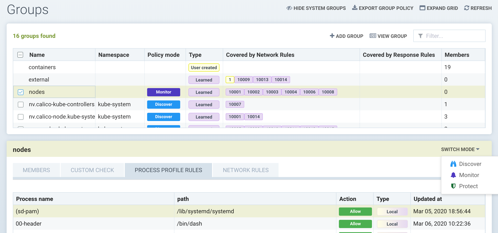

组
策略：组
此菜单是查看和管理安全规则以及自定义组以用于规则的关键区域。它还用于在发现、监控和保护之间切换组的模式。容器组可以在与网络规则不同的模式下拥有处理/文件规则，如这里所述。请参阅以下各个部分以了解自定义合规检查、网络规则、处理和文件访问规则以及DLP/WAF检测的解释。注意：网络规则可以在任何组的组菜单中查看，但必须在网络规则菜单中单独编辑。
SUSE® Security会自动从您正在运行的应用程序中创建组。这些组以 'nv.' 为前缀。您还可以使用 CRD 或 REST API 手动添加它们，并且可以在发现、监控或保护任一模式下创建它们。网络和响应规则需要这些组定义。对于自动创建的组（以’nv’开头的’学习’组），SUSE® Security将在发现模式下学习网络和处理规则并添加它们。自定义组不会自动学习和填充规则。注意：'nv.'组默认启用零漂移以进行处理/文件保护。

查看容器组并对每个组应用规则非常方便。SUSE® Security根据容器镜像创建组列表。例如，所有从一个Wordpress镜像启动的容器将位于同一组中。规则会自动创建并应用于容器组。
组屏幕的右上角还显示一个’可评分’图标，可以选择学习组并启用或禁用可评分复选框。这控制哪些容器用于计算仪表板中的安全风险评分。有关更多详细信息，请参见提高安全风险评分。
组屏幕也是可以导入和导出“作为代码的安全策略”的 CRD yaml 文件的地方。选择一个或多个组，然后点击导出组策略按钮以下载yaml文件。有关如何使用CRD的更多详细信息，请参见CRD部分。重要说明：每个选定的组及通过网络规则链接的任何组将被导出（即该组及通过白名单网络规则连接的任何其他组）。
主机保护 - '节点’组
SUSE® Security自动创建一个名为’nodes’的组，代表集群中的每个节点（主机）。SUSE® Security提供对主机可疑处理（如端口扫描、反向shell等）和特权提升的自动基本监控。此外，SUSE® Security将在发现模式下学习每个节点的进程行为，以将这些进程列入白名单，类似于对容器进程的处理方式。 在发现模式下，'本地'（学习到的）进程规则列表是集群中所有节点的所有进程的组合。
然后可以将节点置于监控或保护模式，在监控模式下，SUSE® Security会在任何进程启动时发出警报，而在保护模式下会阻止该进程。

要启用具有处理控制文件规则的主机保护，请选择’nodes’组并查看节点上的学习到的处理。如有需要，可以通过添加、删除或编辑处理规则进行自定义。然后将模式切换为监控或保护。
|
在保护模式下，网络规则中显示的节点的网络连接违规行为永远不会被阻止。在节点的保护模式下，仅阻止进程违规行为。 |
自定义组
可以通过输入组的标准手动添加组。注意：自定义创建的组没有保护模式。这是因为它们可能包含来自不同基础组的容器，每个组可能处于不同的模式，从而导致行为上的混淆。
可以通过以下方式创建组：
-
图像
通过容器的镜像名称选择容器。示例：image=wordpress, image@redis
-
节点
通过运行它们的节点选择容器。示例：node=ip-12-34-56-78.us-west-2
-
单个容器
通过实例名称选择容器。示例：container=nodejs_1, container@nodejs
-
服务
通过服务选择容器。如果容器是通过 Docker Compose 部署的，则其服务标签值将为 "project_name:service_name"；如果容器是通过 Docker swarm 模式服务部署的，则其服务标签值将为 swarm 服务名称。
-
标签
通过标签选择容器。示例：com.docker.compose.project=wordpress, location@us-west
-
地址
通过 DNS 名称或 IP 地址范围创建组。示例：address=www.google.com, address=10.1.0.1, address=10.1.0.0/24, address=10.1.0.1-10.1.0.25。DNS 名称可以是任何可解析的名称。地址条件不接受 != 运算符。请参见下面的特殊虚拟主机 'vh' 地址组。
可以使用混合条件类型创建组，除了 'address' 类型，不能与其他条件一起使用。混合条件在条件之间强制执行一个 ‘AND’ 操作，例如标签 service_type=data AND image=mysql。一个或多个条件的多个条目被视为 OR，例如 address=google.com OR address=yahoo.com。注意：为了帮助分析进出连接，可以从仪表板 → 的进出详细信息部分下载进出 IP 列表作为暴露报告。
支持对镜像、节点、容器、服务和标签标准进行部分匹配。例如，image@redis 选择镜像名称包含 'redis' 子字符串的容器；image^redis 选择镜像名称以 'redis' 开头的容器。
不建议使用地址标准来匹配内部 IP 或子网，特别是那些受到执行者保护的，建议使用它们的元数据，例如镜像、服务或标签。地址组的典型用例是定义托管容器与外部 IP 子网之间的策略，例如在互联网上或另一个数据中心运行的服务。地址组没有组成员。
可以在标准中使用通配符 ''，例如 'address=.google.com'。为了更灵活的匹配，使用波浪号 '~' 表示希望进行正则表达式匹配。例如，匹配标签 'policy~public.*-ext1' 的策略标签。
|
在标准中，等号 '=' 后使用的特殊字符可能无法正确匹配。例如，点 '.'在 'policy=public.' 中将无法正确匹配，应该使用正则表达式匹配，例如 'policy~public.'。 |
保存新组后，SUSE® Security 将显示该组中的成员。然后可以使用这些组创建规则。
自定义组示例
一般标准
-
选择所有容器（以下任一示例均可）
container=∗ service=∗
-
选择名称空间为 'default' 的所有容器（名称空间从 v2.2 开始支持）。
namespace=default
-
选择所有服务名称以’nginx’开头的容器
service=nginx∗
-
选择所有服务名称包含’etcd’的容器
service=∗etcd∗
-
选择名称空间为 'apache1' 或 'apache2' 的所有容器（每个条目后按回车）。
namespace=apache1 namespace=apache2
-
选择不在 'apache1' 和 'apache2' 名称空间中的所有容器（每个条目后按回车）。
namespace!=apache1 namespace!=apache2
-
选择名称空间为 'apache1~9' 的所有容器。
namespace~apache[1-9]